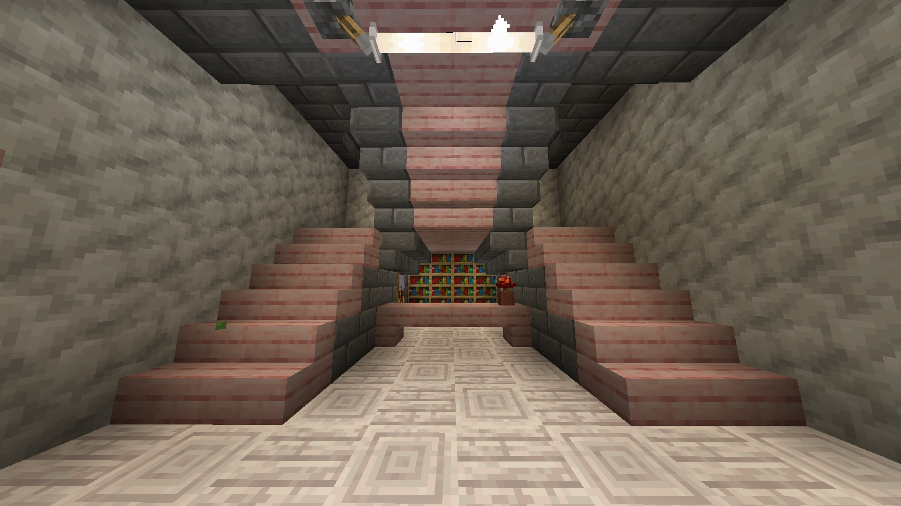
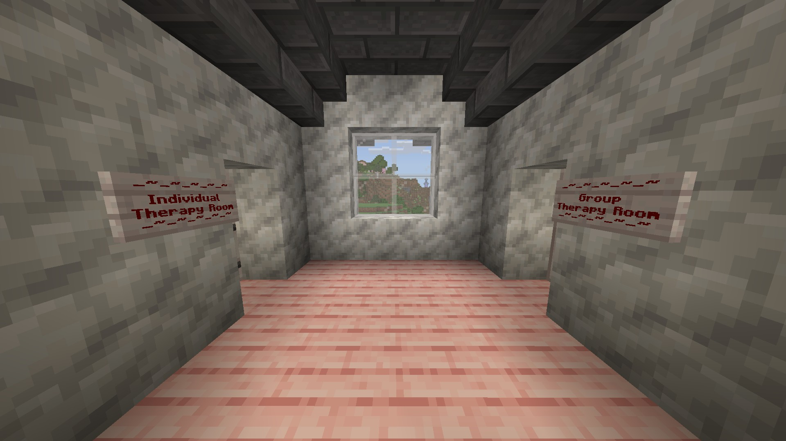
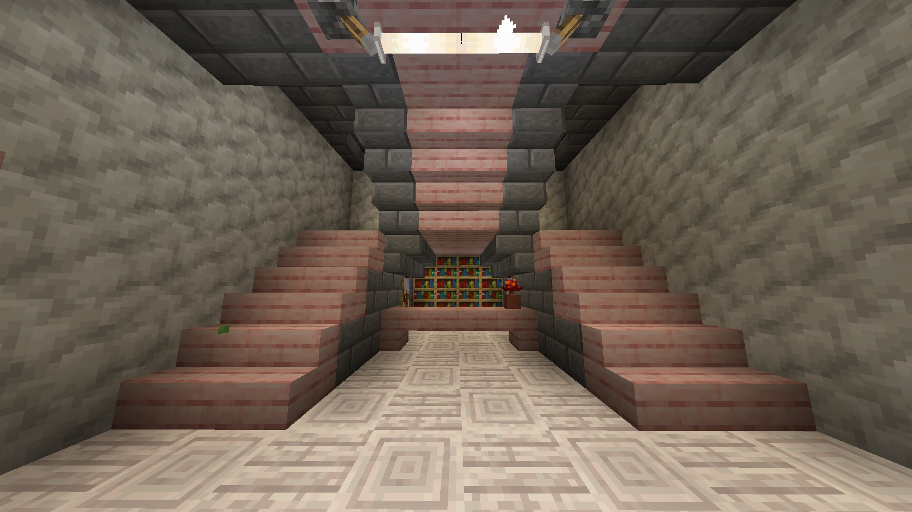
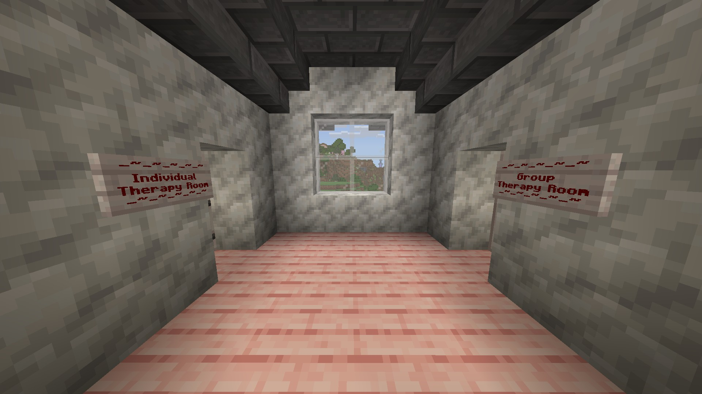

What we offer.
CAMHS has two private rooms in which patients can be assessed, these include the Individual Therapy Room, and the Group Therapy Room, both with a slightly different purpose to the other.
Individual:
The Individual room is designed for private conversations and assessments between our specialists, and patient. Additionally, this may help build a stronger connection between the specialist and the patient, allowing the patient to feel more open.
Group:
The group therapy room is designed for a group of patients to come together and be assessed on whatever their need may be.
This could include exploring emotions, and build strong connections with others facing similar challenges.
 


